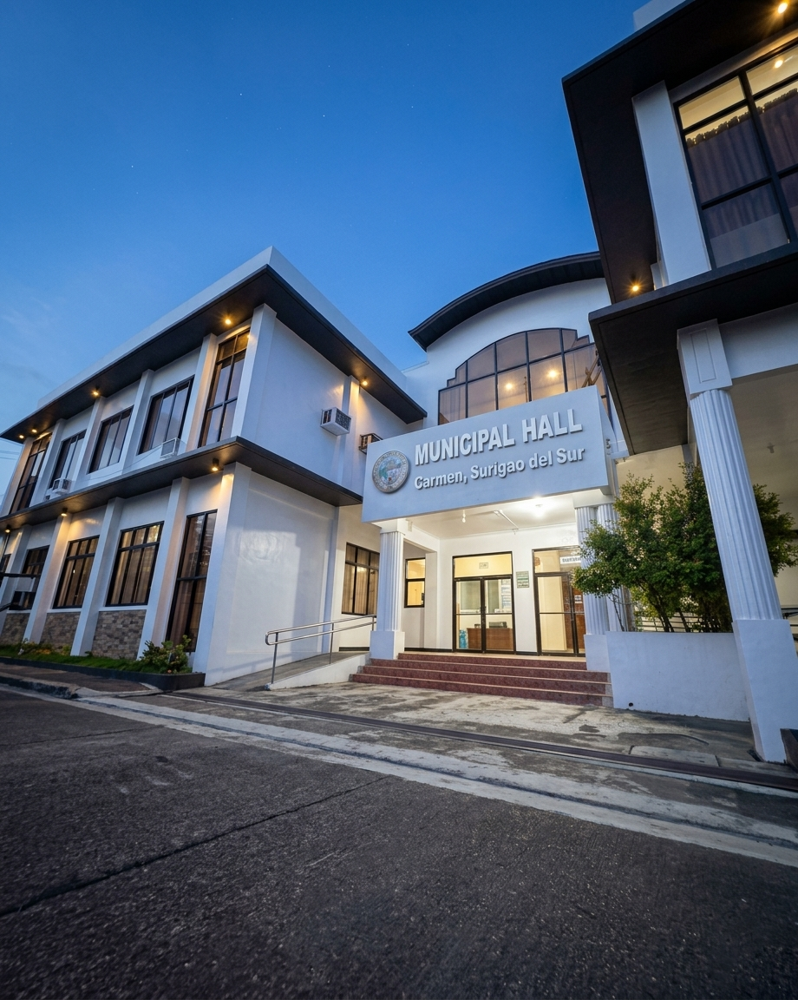

Welcome to the official website of the Municipality of Carmen — an agricultural community of 8 barangays, home to the scenic Carmen Natural Spring, committed to transparent governance, sustainable growth, and genuine public service.
Carmen is a fourth-class municipality in the province of Surigao del Sur, within the Caraga Region of Mindanao. Home to over 11,700 residents across 8 barangays, Carmen continues to grow as a peaceful, agricultural community — anchored on farming and blessed with natural attractions such as the Carmen Natural Spring.
Transact with our offices online or in person — find the department that can help you today.

Call the MDRRMO hotline at (086) 000-0000 or visit the Contact page for the full list of emergency numbers, available 24/7.
Visit the Business Permits and Licensing Office at the Municipal Hall, or check the Services page for requirements and processing time.
Barangay clearances and certificates are requested at your respective Barangay Hall. See the Barangays page for contact details.
Hon. Nestor S. Valeroso currently serves as Municipal Mayor. Visit the Officials page for the full roster of elected leaders.
"Together, we will build a Carmen that is progressive, resilient, and inclusive — where every barangay shares in our municipality's growth."
"The Sangguniang Bayan remains committed to crafting policies that put the welfare of every Carmenhanon first."